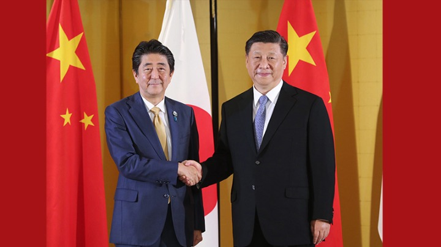

习近平会见日本首相安倍晋三
【习近平会见韩国总统】【感受习近平繁忙的“外交月”】
【习近平赴日出席G20峰会看点】
- 李克强同荷兰首相吕特举行会谈
- 委员登讲堂 录制公开课（人民政协新实践）
- 中共中央授予张富清“全国有限共产党员”称号
- 高质量发展|陕西：打通物流通道 构筑开放高地
- 新疆：特色优势产业为发展注入新动能
- 人民满意的公务员————杨玉斌：海岛守护人
- 它又睡醒了！嫦娥四号巡视器完成唤醒设置
习近平会见日本首相安倍晋三
【习近平会见韩国总统】【感受习近平繁忙的“外交月”】
【习近平赴日出席G20峰会看点】
去年全年，中国数字经济规模达到31.3万亿元，占GDP比重达34.8%；中国创新指数在全球排名 上升至第17位。当前，中国有近14亿人口、近9亿劳动力、8亿网民、1亿多户市场主体……动辄以 “亿”来计量的市场空间，亿万人民的创新创造，凸显出大国经济特质，这是中国经济能够“变中 取 胜”的底气所在。经历了无数次狂风骤雨，大海依旧在，中国永远在！
6月12日至16日，国家主席习近平将应邀对吉尔吉斯斯坦进行国事访问并出席上海合作组织成员国元首理事会第十九次会议、出席亚洲相互协作与信任措施会议第五次峰会并对塔吉克斯坦进行国事访问。
近日，中共中央办公厅印发了《干部选拔任用工作监督检查和责任追究办法》（以下简称《办法》），并发出通知，要求各地区各部门认真遵照执行。“无规矩不成方圆”， 各级党委（党组）及组织人事部门当以《办法》之规矩，画好选人用人之方圆。
5月20日，《中共中央 国务院关于深化改革加强食品安全工作的意见》公开发布,是一场及时雨，民之所望，施政所向。我们快速发展食品产业，逐步健全安全标准体系，不断提高检验检测能力，建立完善全过程监管体系，保障人民群众饮食安全，让人民群众生活更美好，得到更多幸福感、安全感。
近日，中共中央政治局召开会议，决定从今年6月开始，在全党自上而下分两批开展“不忘初心、牢记使命”主题教育。从弱小到强大，从九死一生到蓬勃兴旺，中国共产党永葆生机、屹立不倒的动力源泉就是不忘初心、牢记使命。
坚定不移对外开放，积极主动扩大进口，是我国在综合考虑世界局势、经济发展现状的情况下，遵循经济贸易发展规律做出的主动选择。2019年3月，全国人大通过了外商投资法，旨在进一步扩大对外开放，积极促进外商投资，保护外商投资合法权益，规范外商投资管理，推动形成全面开放新格局。
在西藏漫长的社会发展史中，发生过许多重大事件，而68年前的和平解放，无疑是具有划时代意义的转折点。68载辉煌成就、沧桑巨变，彰显着中国共产党的英明伟大，体现着社会主义制度的无比优越，满载着全国人民的无私援助，镌刻着西藏各族人民的不懈追求。
5月26日，以“创新发展 数说未来”为年度主题的2019年中国国际大数据产业博览会在贵州省贵阳市开幕。新一轮科技革命和产业变革正在深刻重塑经济社会发展格局，我们需要洞察趋势、把握态势，积极主动拥抱创新，抢占科技和产业制高点。
题：共筑强劲活跃增长极——长三角更高质量一体化全面提速 （记者 季明、王圣志、李亚彪、凌军辉、何欣荣；参与记者徐海涛、吴慧珺、刘巍巍、魏一骏、郑钧天、陈诺）
代表委员们不负重托、不辱使命，尽责履职，会风严实，架起直通民心的桥梁，点亮奋进追梦的灯塔，坚定中国信心，凝聚奋斗力量。2019全国两会，让“不凡”成为动力、让“追梦”成为共识，听民意、汇民智，说真话、献良策，在海纳百川中凝聚共识，在求真务中“有呼有应”。
“中国代表着巨大的长期机遇。埃及中国商会秘书长迪亚·希勒米就认为，中国今年经济增长目标符合实际，中国经济富有巨大潜力，也将继续推动全球经济发展。当前，单边主义抬头、逆全球化思潮泛起、各种全球性挑战迭出，世界希望借鉴中国方案，与中国共享发展机遇，破解发展难题。
“严把选人用人政治关、品行关、能力关、作风关、廉洁关，坚决匡正选人用人风气，推动选人用人工作取得显著成效、发生重大变化。” 近日，中共中央印发了修订后的《党政领导干部选拔任用工作条例》，明确提出选拔干部要过“五关”，其中政治关居首。
近日，中共中央印发了修订后的《党政领导干部选拔任用工作条例》（以下简称《条例》），并发出通知，要求各地区各部门结合实际认真遵照执行。《条例》是重要的党内法规，是干部选拔任用工作的基本遵循，具有鲜明的时代性、针对性，指向非常明确，就是要精准科学选人用人，确保选拔任用的干部靠得住、过得硬、能放心。